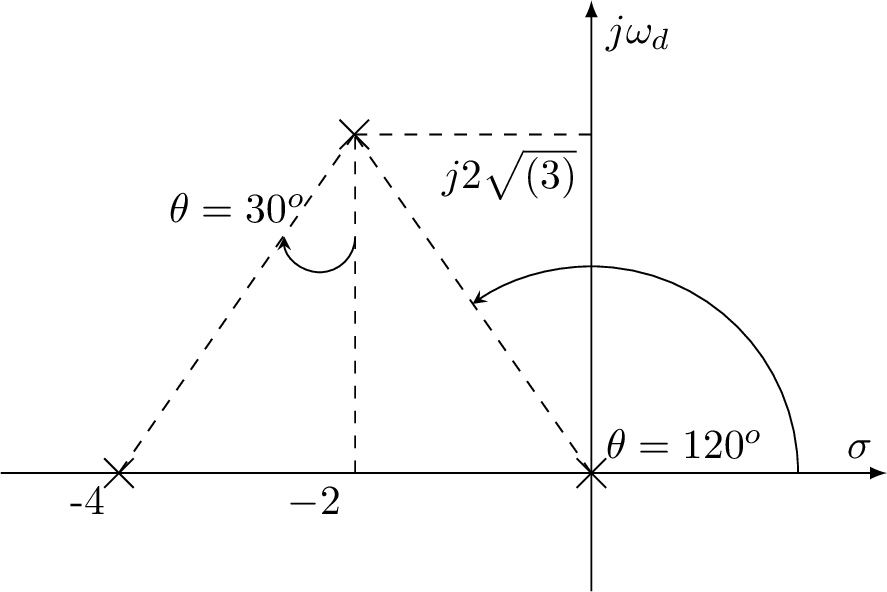

\documentclass{standalone}
\usepackage{tikz}
\usetikzlibrary{shapes.misc}
\begin{document}
\begin{tikzpicture}
% Axes:
\draw [-latex] (-5,0) -- (2.5,0) node [above left] {$\sigma$};
\draw [-latex] (0,-1) -- (0,4) node [below right] {$j\omega_d$};
\node[cross out,draw=black] at (0,0) {};
%\draw[dashed] (0,0) -- node[pos=0.8, above right] {$\omega_p$}(145:6) node[solid, cross out,draw=black] {};
%\draw[red, -stealth] (0,2) arc (90:145:2);
%\draw[dashed] (0,0) -- node[pos=0.8, above right] {$\omega_z$}(125:3.5) node[solid, fill=white, circle,draw=black] {};
%\draw[dashed] (0,0) -- node[pos=0.8, above right] {$\omega_z$}(125:3.5) node[solid, cross out,draw=black] {};
\draw[dashed] (0,0) -- (125:3.5) node[solid, cross out,draw=black] {};
\draw[black, -stealth] (1.75,0) node[pos=0.1,above right] {$\theta=120^o$} arc (0:125:1.75);
%\draw[dashed] (-5,0) node[below left] {$-\xi_p\omega_p$} -- (-5,-3) node[solid, cross out,draw=black] {};
%\draw[dashed] (-2,0) node[below left] {$-\xi_z\omega_z$} -- (-2,-3) node[solid, fill=white, circle,draw=black] {};
%\draw[dashed] (-2,0) node[below left] {$-\xi$} -- (-2,2.85);
%\draw[dashed] (0,2.85) node[below left] {$\omega_n$} -- (-2,2.85);
\draw[dashed] (-2,0) node[below left] {$-2$} -- (-2,2.867);
\draw[dashed] (0,2.867) node[below left] {$j2\sqrt{(3)}$} -- (-2,2.867);
\draw[dashed] (125:3.5) -- (-4,0) node[solid, cross out,draw=black] {};
\draw (-4,0) node [below left] {-4};
\draw[black, -stealth] (-2,2) arc (0:-180:0.3);
\draw (-3,2.25)node[] {$\theta=30^o$};
\end{tikzpicture}
\end{document}Created by David Li